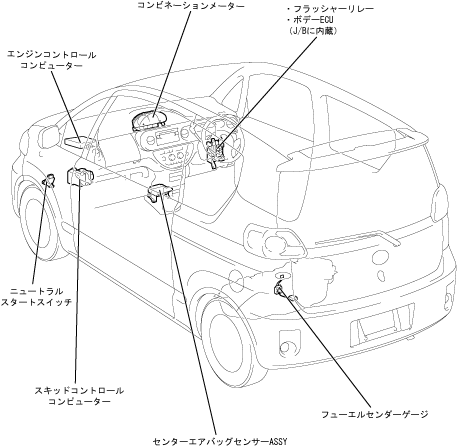

| Meter & gauge system |
| ● |
The combination meter displays the current vehicle status by entering signals such as each connected computer sensor switches.
|
|  |
 List of connections with combination meters List of connections with combination meters
|
|||||||||||||||||||||||||||||||||||||||||||||||||||||||||
List of connecting to the passenger seat belt non -wearing warning indicator
|
 Meter & gauge system operation block diagram Meter & gauge system operation block diagram
|
 Related parts Related parts
|